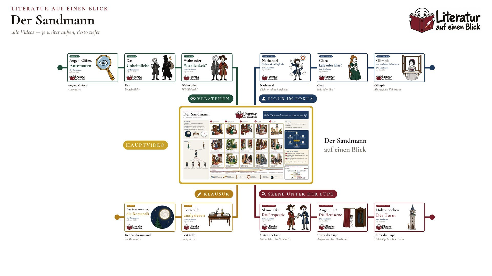

Literatur auf einen Blick · Folge 03
Der Sandmann
E. T. A. Hoffmann · Erzählung · 1816/17
LeitfrageSieht Nathanael zu viel — oder zu wenig?
Ein Junge hört, der Sandmann werfe bösen Kindern Sand in die Augen, bis sie herausspringen. Jahre später glaubt er, den Mann wiederzuerkennen.
Das Lernplakat
Alles, was im Video entsteht, auf einem Blatt: die fünf Etappen der Handlung, die Figuren und ihre Beziehungen, die Symbole, die Deutung und drei Sätze für die Klausur.
Plakat herunterladen PNG · 9600 × 5400 px · 17.5 MB · für den Druck bis DIN A1 Kleinere Fassung JPG · 4800 × 2700 px · für Bildschirm und Tablet

Zum Lernen und für den Unterricht. Bitte unverändert weitergeben und den Kanal nennen.

Drei Sätze für die Klausur
- Form: drei Briefe, dann ein Erzähler.
- Deutung: krank oder verfolgt? Der Text lässt beides offen.
- Epoche: eine Erzählung der Romantik, von ihrer dunklen Seite.
Deutung
Bei Olimpia sieht Nathanael zu wenig, das wissen wir.
Bei Coppelius wissen wir es nicht.
Die Handlung in fünf Etappen
- Der Sandmann Brief 1
- Claras Antwort Brief 2–3, Heimkehr
- Das Perspektiv zurück in G.
- Die Puppe bei Spalanzani
- Der Turm Vaterstadt
Figuren
- Nathanael Student und Dichter
- Lothar Claras Bruder, sein Freund
- Giuseppe Coppola Händler mit Gläsern
- Clara seine Verlobte
- Siegmund Studienfreund, warnt ihn
- Olimpia Spalanzanis Puppe
- Coppelius Advokat aus der Kindheit
Symbole
- Augen was der Sandmann raubt
- Perspektiv Coppolas Taschenfernrohr
- Puppe Olimpia, Spalanzanis Automat
- Feuerkreis der Schrei im Wahn
- Wetterglas Coppolas erste Ware
- Herd blaue Flamme im Schrank des Vaters
Steckbrief
- Epoche
- Romantik (um 1800), ihre dunkle Seite
- Autor
- E. T. A. Hoffmann, Jurist am Berliner Kammergericht
- Gattung
- Erzählung, die erste der „Nachtstücke“
- Handschrift
- datiert „d. 16. Novbr. 1815 Nachts 1 Uhr“
- Erstdruck
- Herbst 1816, auf dem Titelblatt 1817
Kapitel im Video
- 0:00 Einstieg
- 1:13 Steckbrief
- 1:44 Der Bauplan
- 2:18 Etappe 1: Der Sandmann
- 3:25 Etappe 2: Claras Antwort
- 4:59 Etappe 3: Das Perspektiv
- 6:23 Etappe 4: Die Puppe
- 7:21 Etappe 5: Der Turm
- 8:37 Die Figuren
- 9:01 Symbole
- 9:21 Deutung
- 9:37 Das philosophische Netz
- 10:08 Drei Sätze für die Klausur
- 10:33 Das ganze Poster
Grundlage ist die gemeinfreie Erzählung aus den „Nachtstücken“ (1816/17), geprüft am Volltext des Deutschen Textarchivs.
In der Erzählung kommt eine Figur ums Leben und eine andere verliert den Verstand. Wenn es dir nicht gut geht: Die Telefonseelsorge ist rund um die Uhr erreichbar, anonym und kostenlos, unter 0800 111 0 111 oder 0800 111 0 222.
Die Videos zum Werk
Das Hauptvideo erzählt die ganze Erzählung. Die Äste gehen dorthin, wo die Klausur hinschaut: einzelne Stellen am Text, die Figuren, die Deutung und das Schreiben. Was noch fehlt, ist in Arbeit und erscheint im Kanal.

Szene unter der Lupe
ein Auftritt, eine Stelle, ganz nah am Text
- S1 Augen her! Die Herdszene Unter der Lupe geplant
- S3 Sköne Oke Das Perspektiv Unter der Lupe in Arbeit
- S4 Holzpüppchen Der Turm Unter der Lupe geplant
Figur im Fokus
wer sie sind und was der Autor an ihnen zeigt
- F1 Nathanael Dichter seines Unglücks geplant
- F2 Clara kalt oder klar? geplant
- F3 Olimpia die perfekte Zuhörerin geplant
Verstehen
der Bauplan, die Symbole, die Philosophie dahinter
- V1 Wahn oder Wirklichkeit? in Arbeit
- V2 Augen, Gläser, Automaten geplant
- V3 Das Unheimliche geplant
Klausur
was in der Prüfung gefragt wird und wie du es schreibst
- K1 Textstelle analysieren in Arbeit
- K2 Der Sandmann und die Romantik geplant